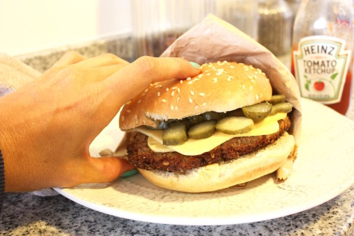

Sandwich de No-Pollo
Delicioso Sandwich de no-pollo ideal para celebraciones o para picnics con tus seres queridos, totalmente vegan.
Para el “No-Huevo”:
- • 3/4 de caldo vegetal hecho en casa idealmente (si no, encuentra uno en tu supermercado más cercano)
- • 1/2 cucharada de sal de mar
- • 2 cucharadas de tahini
- • 3 cucharadas de jugo de pickles
- • 5 no-huevos (cucharadas correspondientes de No-Egg u otros reemplazos que puedes conseguir en supermercados o hacerlos tú mism@)
- • 1/2 cucharada de pimienta negra
Para el “apanado”:
- • 2 cucharadas de levadura en copos
- • 1 cucharada de cebolla en polvo
- • 1/2 cucharada de ajo en polvo
- • 1 taza de harina integral
- • 1/2 taza de quinoa en copos dulce (la consigues en tostadurías)
- • 1 cucharada de polvo de hornear
Para el “No-Pollo”:
- • 1 bandeja de hongos ostra
Además:
- • Papel de cocina
- • 1 plato
- • 1 espumadera
- • 1 sartén mediana y un buen aceite de oliva para freír
- • 1 par de rodajas de pepinillo, 2 láminas de queso ahumado “Violife”, pan de hamburguesa vegano y ketchup o vegan mayo a gusto para servir.
Preparación:
- Mezcla en un bol todos los líquidos para formar el “No-huevo”
- Mezcla en otro bol todos los ingredientes secos para el “apanado”
- Lava los hongos ostra y separa los que tengan una forma mas redondeada como presa de pollo (puaj)
- Pasa los hongos ostra primero por el “No-huevo, luego por el “apanao”, NUEVAMENTE, por el “No-huevo” y NUEVAMENTE por el “apanao” (esto para asegurarnos de que nos quede recontra crujiente y sabroso)
- Pon en tu sartén aceite de oliva de manera que cubra todas las partes de nuestro “No-Pollo” “apanao” y fríe los “no pollos apanaos” hasta que queden dorados y crujientes por ambos lados. Cuando están listos, retira de la sartén con una espumadera y ponlos a secar en un plato con papel de cocina.
- Sirve con pan para hamburguesas vegano, 2 láminas de queso “violife” ahumado, varias rodajas de pepinillo y ketchup o vegan mayo a gusto.